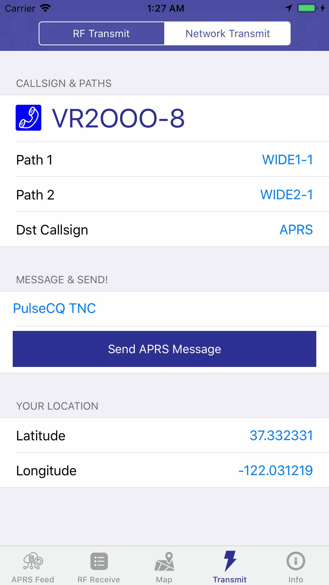

PulseModem A can work without Internet, by connecting the audio port to your amateur radio.
If you are using the commonly available Baofeng UV-5R, you may buy the APRS-K2 cable.
You may also build an adaptor yourself, such as this BaofengUV5R-TRRS:
https://github.com/johnboiles/BaofengUV5R-TRRS
There are also the "Easy Digi" interfaces available on ebay as well.
If you only need to transmit your APRS message, you may actually use the headset output hole, to pipe the audio into your radio mic. This is not recommended though.
You may need to set your radio in VOX mode, for automatic PTT triggers.
If the RF Audio input is either too low, or too high, then PulseModem A may not decode the APRS signals efficiently.
Please:
Future versions of PulseModem A will have better AGC to assist. But there are so much an AGC can do.
Go to the "Transmit" section, make sure your callsign SSID has been setup.
Just type a message, and click "Send ARPS Message". An AX.25 encoded AFSK audio will be generated, which can be transmitted in VOX mode with your radio.
Future versions of the PulseModem A is expected to have a BLE triggered PTT interface with your radio, so stay tuned.
